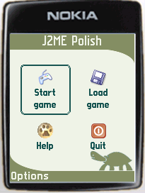
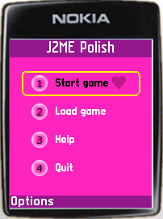
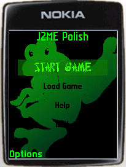
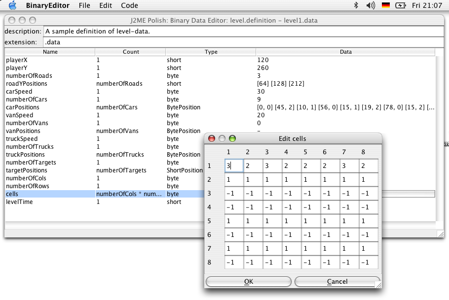

Un recorrido por J2ME Polish
Robert Virkus
Enough Software
Esta presentación se ha creado con S5.
Gracias a Eric Meyer por crear esta fantástica herramienta!
Navegación:
Simplemente haz click con el ratón o utiliza las flechas de dirección para cambiar de página.
Pincha sobre el vínculo "J2ME Polish"(debajo) para volver.
Qué es J2ME Polish?
J2ME Polish es una colección de herramientas para el desarrollo de aplicaciones J2ME:
- Herramientas para la construcción de aplicaciones empaquetadas a partir de un único proyecto fuente con múltiples móviles y regionalizaciones destino.
- Una base de datos de dispositivos que puede utilizarse para ajustar la construcción de aplicaciones a diferentes dispositivos mediante Preprocesamiento.
- Una interfaz de usuario (GUI), que se diseña fuera del código de la aplicación mediante simples archivos de texto.
- Clases utilitarias tales como BitMapFont o ArrayList.
- Un conjunto de herramientas independientes, como el editor de archivos binarios.
- ...y esto es solo el comienzo!
Contrucción de aplicaciones J2ME
Es fácil construir aplicaciones con J2ME Polish:
- Elige los dispositivos destino, ya sea listándolos o describiendo las capacidades que deben poseer (por ejemplo "soporta WMAPI y MIDP/2.0").
- J2ME Polish preprocesa, compila, ofusca y empaqueta la aplicación.
- Además puedes hacer que automáticamente inicie el emulador apropiado durante la fase de desarrollo.
- Y como las herramientas de construcción están basadas en Ant, J2ME Polish es muy configurable y se integra perfectamente en todos los IDEs de Java.
Inclusión de recursos
- J2ME Polish incluye automáticamente los recursos correspondientes a la aplicación.
- Coloca los recursos comunes en el directorio "resources".
- Luego podrás utilizar recursos específicos colocándolos en el subdirectorio apropiado, por ejemplo "resources/Nokia", "resources/Siemens/S65" o "resources/BitPerPixel.16+".
- Es fácil afinar la inclusión de recursos, puedes por ejemplo incluir ficheros MIDI solo cuando el móvil soporta sonido MIDI, y no MP3.
Regionalización
- La regionalización se hace necesaria cuando la aplicación será comercializada en varias regiones.
- Con J2ME Polish puedes ajustar los recursos, ya sean textos, imágenes o sonidos, a las diferentes regiones.
- Regionalizar con J2ME Polish no genera sobrecarga (en comparación con las aplicaciones no-regionalizadas) porque las traducciones se incluyen directamente dentro de la aplicación.
La base de datos de dispositivos
La Base de datos de Dispositivos te ayuda a ajustar tu aplicación para diferentes móviles:
- Se listan más de 300 dispositivos J2ME y sus respectivas capacidades J2ME tales como tamaño del Canvas, APIs, formatos soportados, etc.
- Puedes utilizarla no solo leyendo las capacidades de los dispositivos sino también en tu código fuente durante la etapa de preprocesamiento.
- Y al estar escrita en XML puedes ampliarla muy fácilmente.
Preprocesamiento
- En la etapa de preprocesamiento se cambia el código antes de ser compilado.
- Utilizándola, puedes ajustar la construcción de la aplicación a diferentes dispositivos sin afectar la portabilidad.
- J2ME Polish te provee de poderosas directivas de procesamiento y un esquema de nombres estandarizado.
- Y puedes utilizar cualquiera de las capacidades definidas en la base de datos de dispositivos.
//#if polish.midp2 || polish.api.mmapi
// okay, se puede utilizar la MMAPI para reproducir audio:
Player player = ...
//#endif
GUI (1/2)
- J2ME Polish te permite diseñar la GUI de alto nivel simplemente utilizando archivos de texto de tipo CSS.
- No es difícil:
background-color: rgb(123, 54, 233);
- Dependiendo del ítem o de la pantalla puedes utilizar atributos especializados.
- Puedes usar imágenes, fuentes de mapa de bits, diferentes fondos, animaciones, etc.
- El diseño se realiza completamente fuera del código de la aplicación.
- Por lo que podrás crear varios "temas" sin cambiar el código fuente.
- Con la GUI puedes usar características de MIDP/2.0, como CustomItems, en teléfonos MIDP/1.0!
GUI (2/2)



Estas imágenes muestran la misma aplicación utilizando diferentes "temas".
Por supuesto puedes crear tus propios ítems, fondos, etc.
Motor de Juegos (Game Engine)
- Con el Motor de Juegos de J2ME Polish puedes utilizar el API de juegos de MIDP/2.0 en teléfonos MIDP/1.0.
- Puedes llevar a cabo, además, diferentes estrategias de optimización como el backbuffer para TiledLayer.
- El motor de juegos está altamente optimizado en velocidad para lograr que tu juego rinda al máximo.
- Y solo utilizas un único código fuente para todos los dispositivos donde quieras que corra la aplicación.
Clases Utilitarias
- J2ME Polish cuenta con utilidades que muchas veces son necesarias y que no se encuentran disponibles en J2ME estándar.
de.enough.polish.util.BitMapFont muestra mensajes usando una fuente bitmap.de.enough.polish.util.ArrayList ofrece una eficiente alternativa al Vector. de.enough.polish.util.TextUtil provee operaciones generales de String y parte cadenas de texto para poder visualizarlas en un canvas.
Entorno de Bitácora
- Con el entorno de bitácora puedes ver los mensajes generados vía
System.out.println()cuando tu aplicación corre en dispositivos reales.
- Puedes habilitar diferentes niveles de mensajes, tales como "debug", "warn" o "error" en clases específicas o paquetes.
- Puedes definir tus propios niveles, como por ejemplo "performance".
- Y en la aplicación definitiva puedes desactivar la bitácora por completo para que no quede rastro de tus trazas.
try {
Connection con = Connector.open( url );
...
} catch (Exception e) {
//#debug error
System.out.println("No es posible conectarse" + e );
}
Herramientas independientes
- Utiliza el binary-editor para crear y modificar datos binarios como los archivos de niveles del juego.
- El font-editor crea fuentes bitmap a partir de fuentes true type.

Gracias!
Has completado el recorrido.
Siguientes pasos:
- La página de Características que describe las características más importantes y contiene links a la documentación detallada.
- El Tutorial que explica la aplicación para que puedas dar tus primeros pasos.
- Busca en la Documentation para obtener información completa.
- Y no olvides de descargar J2ME Polish.